Estilo de Vida
Amenidades do Raízes
Um condomínio fechado com áreas comuns selecionadas para bem-estar, funcionalidade e convivência diária.
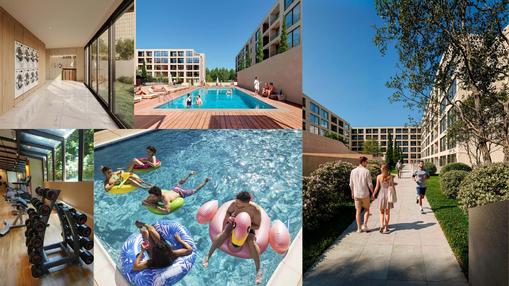
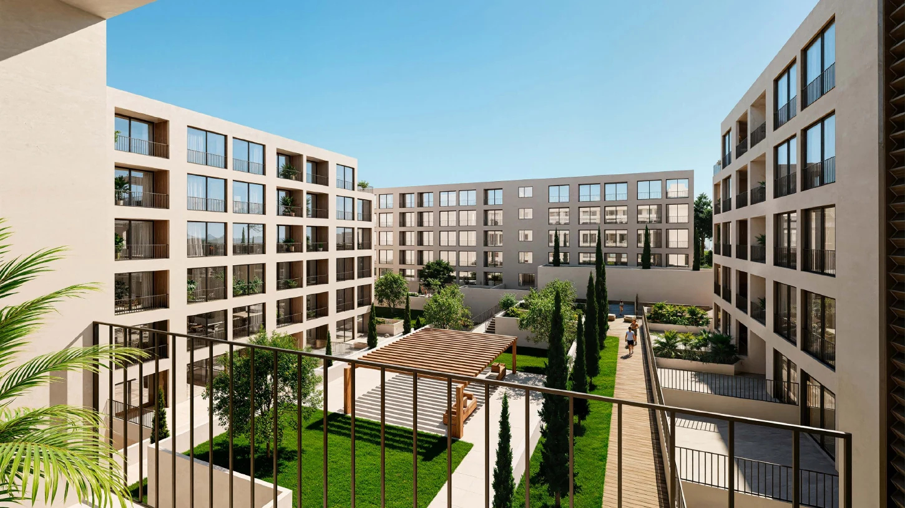

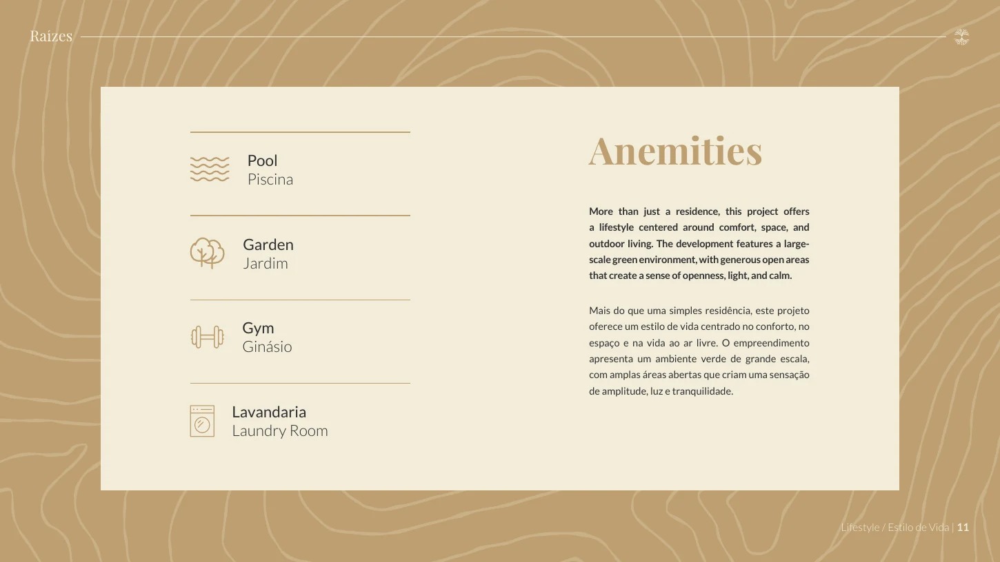

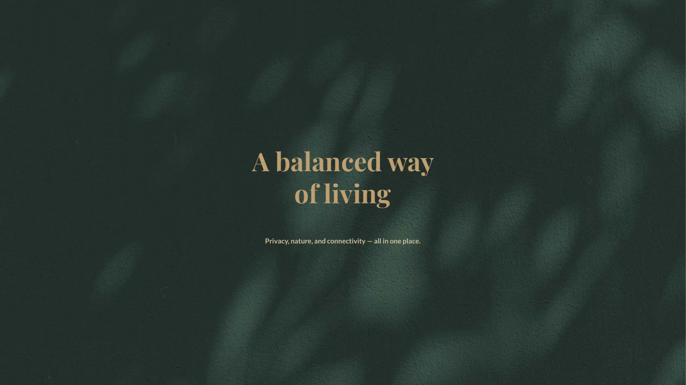
Fânzeres · Gondomar · Portugal
Apartamentos T0, T1 e T2 num condomínio fechado concebido para conforto, privacidade e vida moderna, com piscina exterior, ginásio, pátio ajardinado, lavandaria e estacionamento privado.
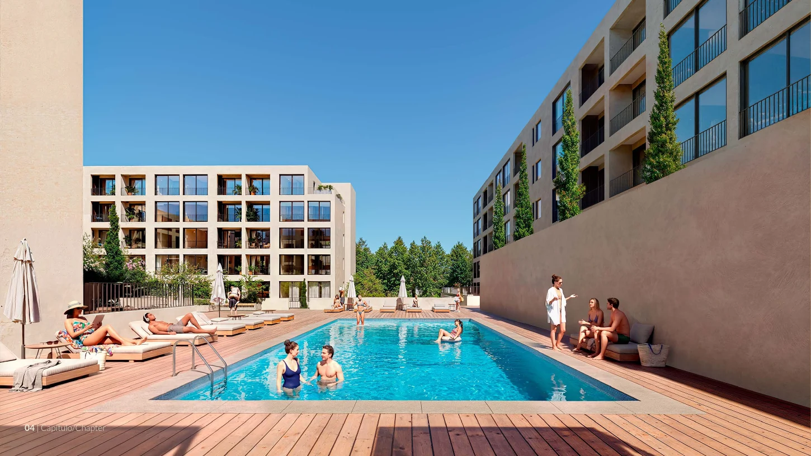
O Projecto
O Raízes nasce em Fânzeres, Gondomar, como um empreendimento residencial de escala contemporânea, composto por 226 apartamentos distribuídos por dois edifícios. O projeto combina privacidade, conforto e espaços comuns pensados para simplificar e valorizar a vida diária.
Cada apartamento foi apresentado no DPS com estacionamento privado e possibilidade de varanda, terraço ou jardim, conforme a configuração da fração. A proposta centra-se numa vida moderna, equilibrada e próxima da natureza, sem abdicar da ligação urbana ao Porto.
Estilo de Vida
Um condomínio fechado com áreas comuns selecionadas para bem-estar, funcionalidade e convivência diária.




Conceito
O Raízes foi apresentado como uma proposta residencial onde cada detalhe apoia uma forma de viver mais calma, funcional e ligada ao exterior.
Um ambiente reservado e pensado para maior privacidade no quotidiano.
Jardins e pátios interiores reforçam a ligação entre casa, natureza e comunidade.
Cada apartamento inclui estacionamento privado, segundo o DPS.
As frações podem integrar espaços exteriores privativos, conforme layout.
Ambientes contemporâneos, com soluções de arrumação e divisões adaptadas à vida moderna.
Viver numa zona calma e verde, mantendo ligação rápida a serviços e transportes.

Mobilidade
A localização do Raízes combina uma zona residencial tranquila com proximidade ao metro, serviços e equipamentos urbanos relevantes.
Ligação prática ao Porto e ao centro de Fânzeres.
Reforço futuro da rede de mobilidade na zona.
Restaurantes a cerca de 200 m e comércio nas redondezas.
Conveniência comercial e espaços verdes a curta distância.
Localização
Fânzeres oferece um enquadramento residencial calmo e verde no concelho de Gondomar, mantendo proximidade a transportes, comércio, equipamentos desportivos, ensino e saúde.

A Zona
O Raízes posiciona-se numa zona residencial que privilegia tranquilidade, proximidade a espaços verdes e acesso aos eixos urbanos de Gondomar e Porto.
Localização indicada no DPS como calma, verde e conectada.
Metro próximo, permitindo deslocações quotidianas mais simples.
Serviços, restauração, equipamentos desportivos e comércio na envolvente.
Boa adequação a habitação própria ou investimento residencial.
Conveniência
O DPS destaca uma rede de pontos de interesse que complementa o quotidiano, desde mobilidade a lazer, saúde, ensino e desporto.
Centro comercial a cerca de 6,1 km.
Espaço verde de referência a cerca de 6,1 km.
Equipamentos de saúde e ensino em curta distância de carro.
Equipamentos desportivos indicados a cerca de 300 m.


Green Living
A proposta do Raízes valoriza o equilíbrio entre a serenidade da envolvente verde, os espaços comuns ajardinados e a proximidade à vida urbana.
Piscina exterior, pátio ajardinado, ginásio e lavandaria compõem um conjunto de amenidades prático e coerente com uma rotina contemporânea.
Condomínio fechado · Espaços verdes · Mobilidade · Conforto diário
Apartamentos
O DPS apresenta tipologias T0, T1 e T2. Como não foram indicadas áreas ou preços nas páginas utilizadas, os detalhes específicos devem ser confirmados por fração.
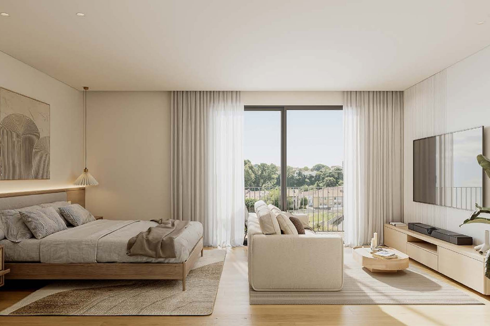
Solução compacta e funcional, adequada a investimento ou habitação prática, beneficiando das amenidades do condomínio.
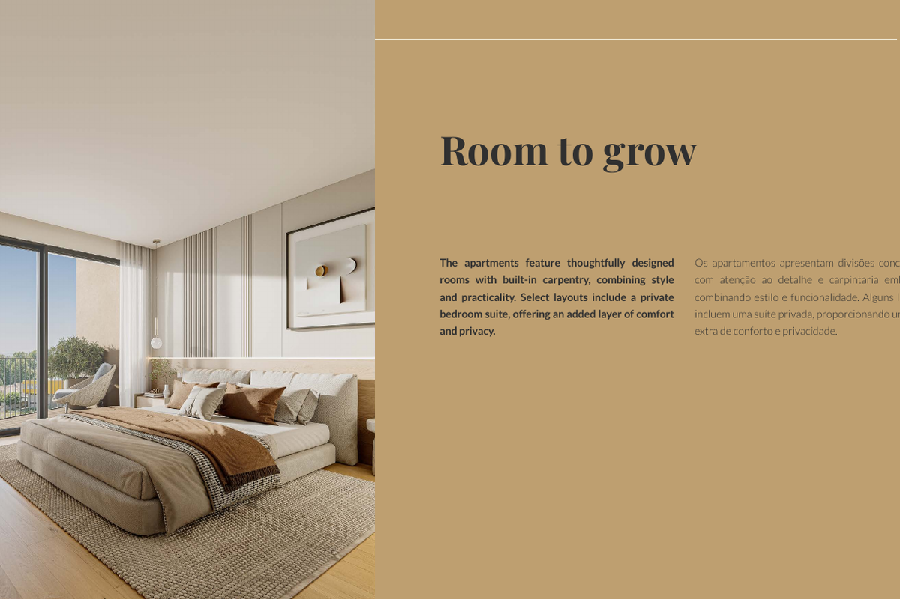
Apartamento de um quarto pensado para conforto diário, com acesso às áreas comuns e ao enquadramento residencial de Fânzeres.
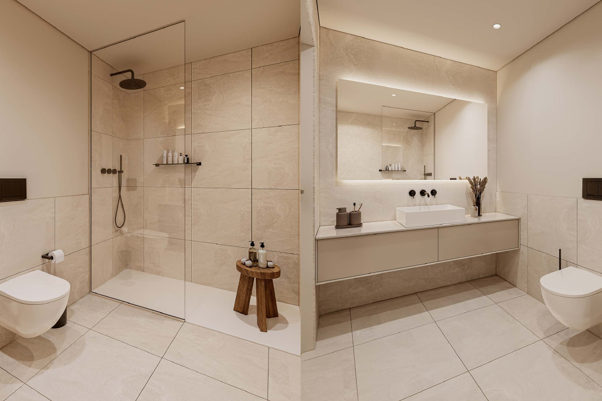
Solução versátil para famílias, casais ou investidores que procuram maior flexibilidade de utilização e conforto residencial.
Imagens
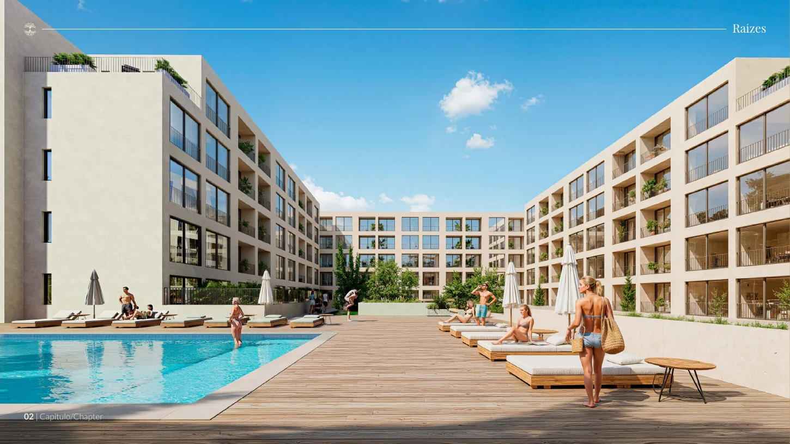

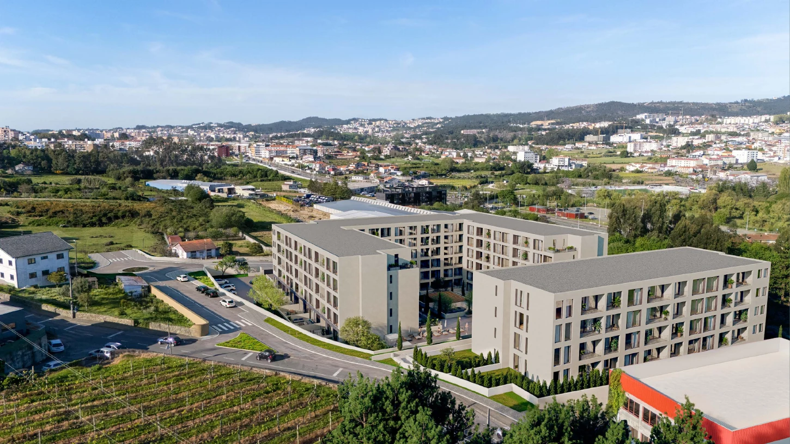
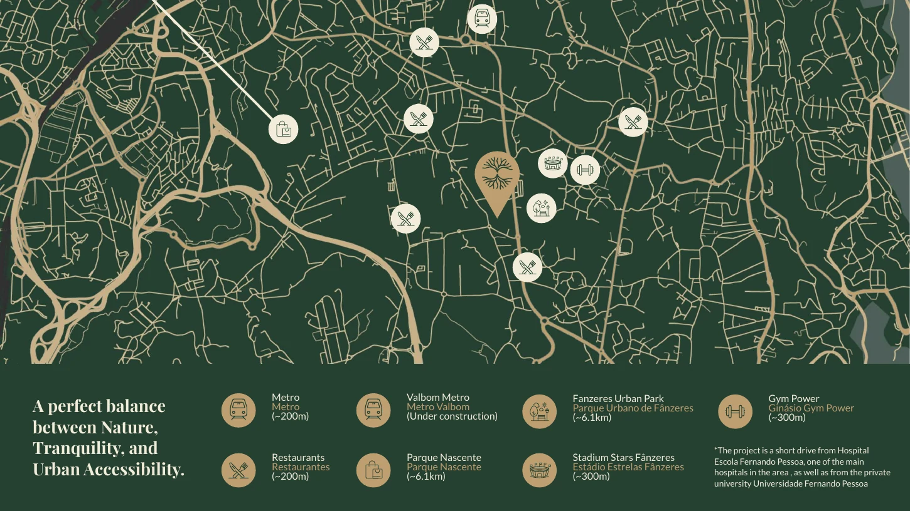


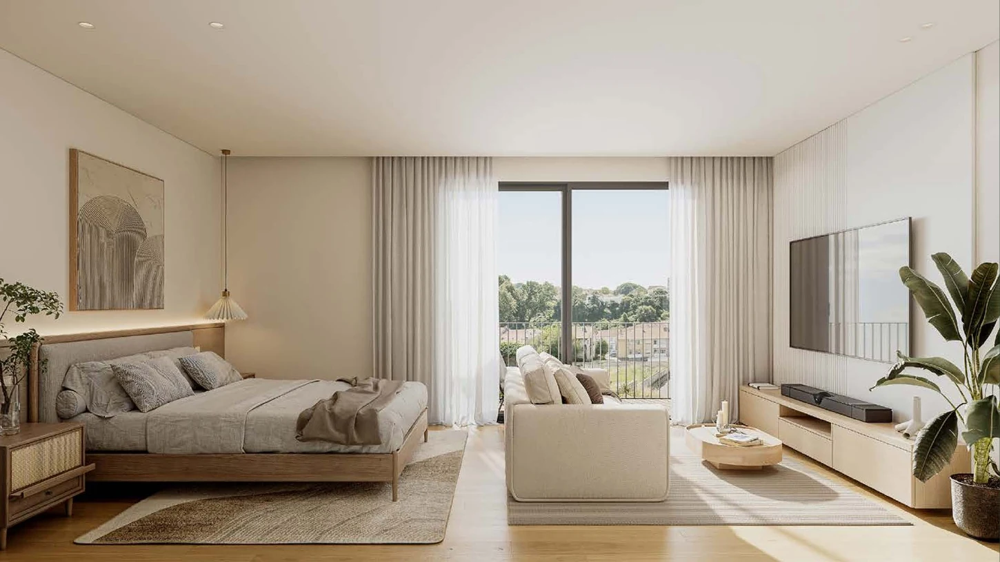
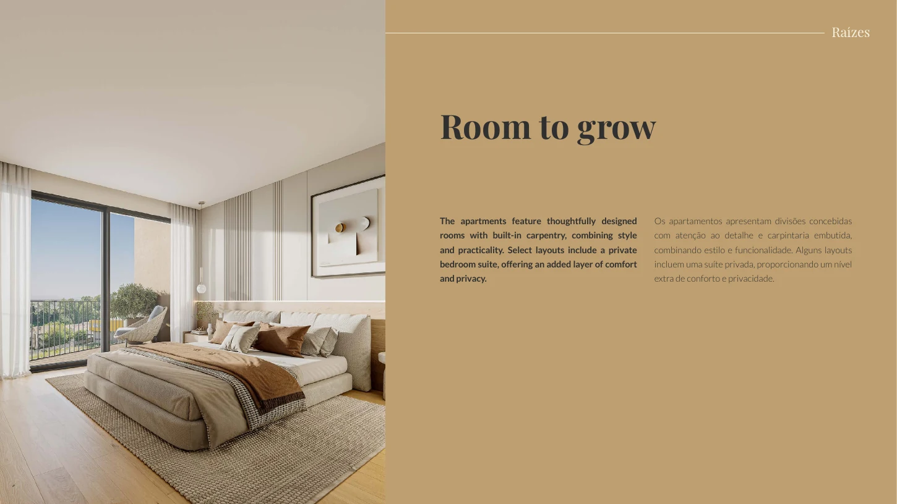
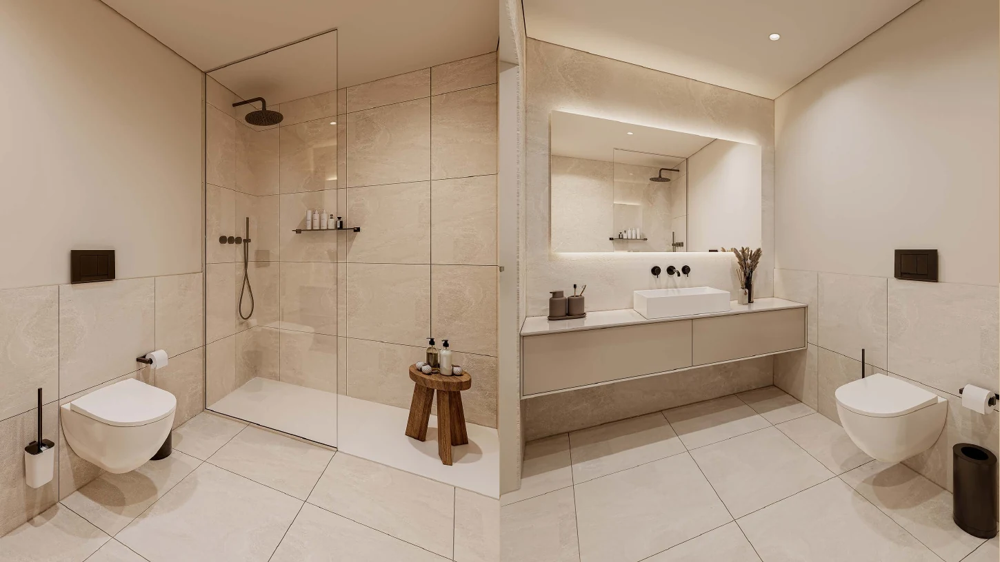

Qualidade & Detalhe
Os elementos abaixo correspondem apenas aos dados identificados nas páginas utilizadas do DPS, sem acrescentar especificações técnicas não confirmadas.
Tipologias T0, T1 e T2, com foco em espaços contemporâneos, conforto diário e possibilidade de áreas exteriores privativas conforme fração.
Condomínio fechado com piscina exterior, ginásio equipado, pátio/jardim ajardinado, lavandaria e estacionamento privado.
As imagens do DPS destacam interiores luminosos, quartos com arrumação embutida, casas de banho contemporâneas e ambientes preparados para crescer com os residentes.
Fânzeres, Gondomar, com metro próximo, serviços e equipamentos urbanos relevantes na envolvente.
Perguntas Frequentes
O Raízes situa-se em Fânzeres, no concelho de Gondomar, Portugal, numa zona residencial calma e verde, com ligação rápida ao Porto e ao centro de Fânzeres através do metro.
O empreendimento apresenta apartamentos T0, T1 e T2, distribuídos por dois edifícios e pensados para diferentes perfis de utilização, desde investimento a habitação própria.
O DPS apresenta piscina exterior, ginásio totalmente equipado, pátio ou jardim ajardinado, lavandaria e estacionamento privado por apartamento.
Sim. O empreendimento beneficia de metro a cerca de 200 metros, restaurantes na proximidade, Metro Valbom em construção e acesso conveniente a serviços como Parque Nascente, Parque Urbano de Fânzeres, hospital, universidade, estádio e ginásio.
Segundo o DPS, cada apartamento pode beneficiar de varanda, terraço ou jardim, conforme a tipologia e configuração específica da fração.
Apresentação Oficial
Apresentação visual baseada nas páginas úteis do DPS fornecido para o empreendimento Raízes.
Fale Connosco
A nossa equipa está disponível para responder às suas questões sobre o Raízes.

Fânzeres
Gondomar
Portugal